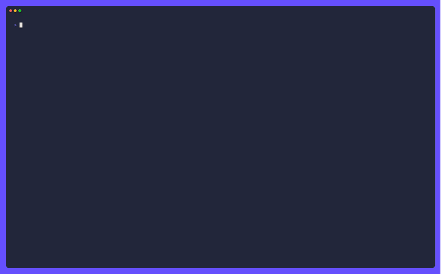

Five coding agents, one protocol: wiring Google Antigravity into ACP
pi-go runs other coding agents as subagents over the Agent Client Protocol. Adding a fifth — Google Antigravity — sounded like a one-afternoon job. It wasn’t, and the reason is a good lesson about what “supports ACP” actually means.

The twist: the vendor CLI is not the ACP endpoint
For Claude, Gemini, Cursor, and Copilot, the ACP adapter wraps the vendor’s own interactive CLI. You launch claude, gemini, or cursor and it speaks ACP over stdio.
Antigravity is different. The agy CLI has no ACP mode. There is no flag that turns it into a protocol server. So the adapter can’t wrap the CLI the way the others do — it has to run a separate binary, agy_acp_server, that the Agent Client Protocol registry distributes as a platform archive.
That changes the whole integration shape. Instead of “find the CLI on PATH and launch it”, the adapter has to:
- Resolve the server binary. It looks in
~/.pi-go/acp/agyfirst (where the installer extracts it), then falls back to PATH, and honours aPI_ACP_AGY_CMDoverride for people who want to point at their own build. - Build the platform-specific argument list. The registry entry declares
--uid=on Linux only. On macOS and Windows the server takes no arguments. - Install it. Two scripts —
install-agy-acp.shand.ps1— read the registry entry, resolve the current platform, verify the sha256 when the entry carries one, and extract into~/.pi-go/acp/agy.
The auth wall you hit on the first real run
The server starts fine. pi-go spawns it, completes initialize (protocolVersion 1, agentInfo antigravity-acp), and reaches session/new. Then the turn stops.
The server does not inherit the agy CLI’s login. It refuses to start a session until an auth method is selected in ~/.gemini/antigravity-acp/settings.json:
{ "auth": { "type": "oauth-personal" } }
The valid types are oauth-personal, gemini-api-key, oauth-business, and agent-platform. And oauth-personal needs a one-time browser sign-in — which is interactive, so it has to be done by hand before a subagent turn will run.
This is the part that’s easy to miss when you read “supports ACP” on a registry page. The protocol handshake is the easy 10%. The auth story is where the real integration work lives, and it’s different for every vendor.
Testing around an interactive login
The e2e test that drives a real Antigravity turn can’t run unattended — it blocks on that browser login. So the test is build-tagged and gated behind PI_ACP_AGY_E2E. An unattended make test-e2e skips it rather than hanging on a login prompt that will never be answered.
The unit tests, meanwhile, cover what they can without a server: empty-prompt rejection, binary lookup, and the command-resolution order (explicit binary → test override → env override → default paths).
What “add a provider” really means
Adding Antigravity to a multi-agent tool wasn’t writing a new protocol handler. The shared ACP client already owns connection wiring, stderr streaming, event translation, and result capture. The new adapter only had to answer one question: what binary do I run, and with what arguments?
But answering that question surfaced everything the registry page doesn’t tell you:
- the vendor CLI isn’t the ACP endpoint, so you need a separate server binary;
- that binary needs installing, with checksum verification, per platform;
- the server has its own auth state, separate from the CLI’s login;
- the first login is interactive and can’t be automated.
The protocol is the easy part. The platform, the install, and the auth are the work. If you’re building on ACP, budget for all three — and read the registry entry as a starting point, not a spec.
Try pi-go
Open source, MIT licensed, one binary away.